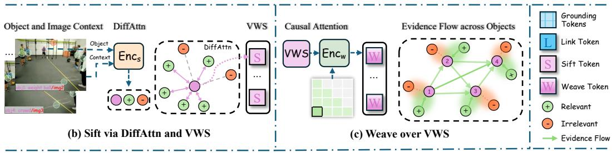
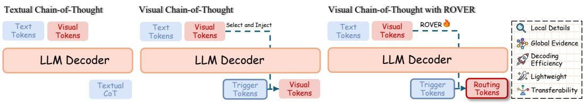

先说结论。它说明 object-centric visual evidence 如何在 VLM 中被路由和复用，对未来通用视觉表征的“可查询性”有参考价值。 避免单纯裁剪 RoI 或注入 RoI features 导致全局场景和对象关系被削弱，同时降低多图、多对象推理上下文成本。

Figureure 3 · : Overview of ROVERFigure 3: Overview of ROVER. (a) ROVER Pipeline. Triggered by each object grounding, ROVER injects a Link/Sift/Weave token triplet to route visual evidence through the VWS. The MLLM then autoregressively interleaves reasoning and subsequent grounding steps, concluding with a pure-text answer. (b) Sift via DiffAttn and VWS. Leveraging object-centric differential attention, Sift distills complementary visual context while suppressing irrelevant regions to populate the VWS with compact object-centric cues. (c) Weave over VWS. Via history-aware attention, Weave routes and integrates relevant evidence from previously grounded objects into the current reasoning state.这张图概括 ROVER 的整体方法流程。阅读时先看模块之间传递的训练信号，再看作者如何把目标拆成可优化的子问题。

Figureure 1 · : Comparison between our method and prior paradigmsFigure 1: Comparison between our method and prior paradigms. Compared to textual CoT and existing visual CoT approaches, ROVER preserves local object details while seamlessly routing evidence across objects and images. It is learnable, lightweight, and decoding-efficient by injecting a constant-length token triplet per grounding step, and exhibits strong transferability.这张图/表用于判断 ROVER 的实验收益来自哪里。重点看替换、消融或跨模型设置下趋势是否一致，而不是只看单个最高分。